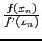

suivant: fsolve avec l'option secant_solver
monter: Résolution d'équations avec fsolve
précédent: fsolve avec l'option falsepos_solver
Table des matières
Index
La méthode de Newton est la méthode standard.
L'algorithme démarre par une valeur initiale x0, on cherche
l'intersection x1
de la tangente en x0 au graphe de f, avec l'axe des x, puis à chaque
itération on recommence en prenant x1 comme valeur x0 :
La suite des xi est donc définie par :
x0 = x0 et
xn+1 = xn - 
La méthode de Newton quand elle converge, converge de façon quadratique pour les racines simples.
On tape :
fsolve(cos(x)=x,x,0,newton_solver)
On obtient :
0.739085133215
Documentation de giac écrite par Renée De Graeve